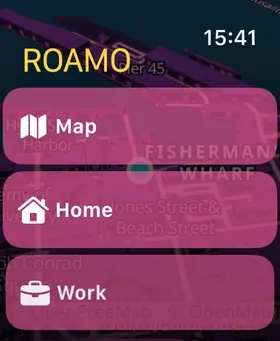

ROAMO 1.0 ヘルプセンター
どのようなお手伝いができますか？
iPhone、iPad、CarPlay、Apple Watch で ROAMO を使うためのステップごとのガイドと、購入やプライバシーに関する回答です。
この翻訳は参考用です。英語版と内容が異なる場合は、英語版が優先されます。
1分ではじめる
ROAMO は本格的なターンバイターンのナビアプリです。アカウント作成は不要。開いてすぐ出発できます。
- 位置情報を許可すると、ROAMO が現在地を表示して案内します。
- 検索または音声で：住所や場所を入力するか、マイクをタップするか、ガソリン、充電、カフェなど周辺のカテゴリを選びます。
- 車、自転車、徒歩でルートをプレビューし、最速ルートと最短ルートを比べます。
- 出発をタップ。大きなターンカード、制限速度と並ぶ現在の速度、音声案内が目的地まで導きます。
22 のマップワールド、うち 2 つは無料
マップでワールド切替をタップすると、地面、水、道路、ラベル、ルートの色まですべて描き直されます。Block World と Doodle Notebook はずっと無料。ROAMO Pro で 22 のワールドすべてが使えます。
- 昼のワールドと夜のワールドを選べます。Neon Night のような暗いワールドは日没後に光ります。
- 移動の途中でも、iPhone でも CarPlay でもワールドを切り替えられます。
- ワールドごとに専用のコパイロットが話します。設定 › コパイロットの声 で選べます。クラシックは無料、キャラクターボイスは Pro で使えます。


CarPlay で ROAMO
ゲーム風マップ、検索、ターンバイターン案内を車の画面で。iPhone と同期します。
- iPhone を車にケーブルまたはワイヤレスで接続します。
- CarPlay のホーム画面で ROAMO をタップします。
- 車のキーボードで検索するか、最近の場所やお気に入りを選んで出発をタップします。
- 運転中は地球儀ボタンでワールドを切り替え、終了で案内を止めます。
車に ROAMO が表示されない場合は、iPhone で 設定 › 一般 › CarPlay を開き、車を選んで カスタマイズ から ROAMO を追加してください。

ロック画面と Apple Watch で
ナビ中は、アプリの外でも次の曲がり角がついてきます。
- ライブアクティビティ：次の曲がり角と到着時刻をロック画面と Dynamic Island に表示。iPhone の 設定 › ROAMO › ライブアクティビティ で許可します。
- ウィジェット：ホーム画面に ROAMO を追加すると、ワンタップで自宅や職場へのルートを開始できます。
- Apple Watch：ターンカード、マップ、自宅、職場、お気に入りを手首に。iPhone の Watch アプリの「利用可能な App」からインストールします。
- Siri：「ROAMOで自宅へ案内」や「ROAMOで近くのカフェを探す」と話しかけます。



自分好みに
- World Studio（Pro）：22 のワールドのどれかから始めて、色を変え、写真をテクスチャに使い、場所のアイコンも自作できます。ワールド切替をタップし、自分だけのワールドを作成を選びます。
- ポインタ：車用のゲーム風ポインタを選ぶか、写真から自分だけのポインタを作れます。
- アプリアイコン：走行距離 10、50、100、250、500、1,000 km で 6 つの代替アイコンが解放されます。設定 › アプリアイコン をご覧ください。
- ワールドを共有：.roamoworld ファイルを AirDrop、メッセージ、ファイルで送れます。サーバーを経由することはありません。


旅をビデオに
ナビした旅はどれも、あなたのワールドでルートを再生するビデオになります。TikTok、リール、ショートにそのまま使えます。
- 旅はナビ中に記録され、iPhone の中だけに保存されます。設定 › 旅を記録 でオフにできます。
- 到着したら旅のビデオを作成をタップ。あとから 設定 › 旅とビデオ でも作れます。
- フォーマット（9:16、1:1、4:5、16:9）、長さ、フィルタ、タイトル、音楽を選びます。
- 写真に保存するか共有します。Pro ではウォーターマークなしで、自分の音楽も使えます。
フロントカメラの短いクリップ（音声なし）を加えることもできます。オンにしたときだけ撮影され、iPhone の中に保存されます。

よくある質問
購入を復元するには？
ROAMOを開き、歯車ボタンで設定を開いて購入を復元をタップします。ROAMO Proを購入したときと同じApple IDでApp Storeにサインインしていることを確認してください。
サブスクリプションを解約するには？
サブスクリプションはAppleが管理しています。iPhoneで設定 › [ユーザ名] › サブスクリプション › ROAMOを開き、サブスクリプションをキャンセルをタップします。次の期間の請求を避けるには、更新日の24時間前までに解約してください。アプリを削除してもサブスクリプションは解約されません。
無料でできることは？
Block WorldとDoodle Notebookはずっと無料で、検索、周辺スポット、ターンバイターンのナビが使えます。ROAMO Proで残り20のワールドが解放されます。
「地図サービスの1日の上限に達しました」と表示されるのはなぜ？
検索とルート検索は、1日のリクエスト上限がある共有の地図サービスを利用しています。上限に達した場合は、しばらくしてからお試しください。上限は毎日リセットされます。地図の表示や保存した場所はそのまま使えます。
言語を変更するには？
ROAMOを開き、歯車ボタンをタップして言語から選びます。「システムのデフォルト」はiPhoneの言語に従います。一部のテキストはROAMOの再起動後に反映される場合があります。
マイルとキロを切り替えたり、音声をミュートしたりするには？
ROAMOの設定のナビゲーションで、単位と音声（音声・チャイム・ミュート）を選びます。スピードメーターの非表示もここで設定できます。
青い点が動かない、または違う場所に表示される。
iOSの設定 › プライバシーとセキュリティ › 位置情報サービス › ROAMO で位置情報へのアクセスが許可されているか確認してください。「正確な位置情報」をオンにするのがおすすめです。開けた場所に移動するとGPSが位置をつかみやすくなります。
ROAMO はどのデバイスで使えますか？
iOS 17 以降の iPhone と iPad、CarPlay、watchOS 10 以降の Apple Watch です。ROAMO Pro は一度購入すれば、同じ Apple ID のすべてのデバイスで使えます。
旅やビデオはどこかにアップロードされますか？
いいえ。旅、旅のビデオ、作成したワールド、保存した場所はデバイスの中に残ります。ROAMO にはアカウントも、それらを受け取るサーバーもありません。
便利なリンク
お問い合わせ
info@deeplyai.app までメールでご連絡ください。iPhoneの機種、iOSのバージョン、問題の簡単な説明を添えていただけると助かります。通常2営業日以内に返信します。
スクリーンショットは英語版アプリのものです。